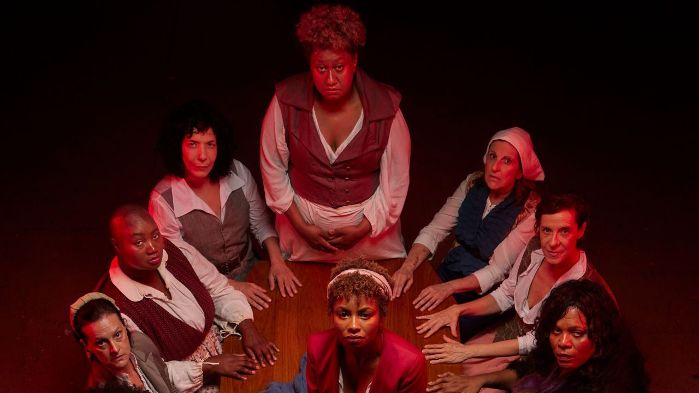

“O Céu Fora Daquela Janela” estreia no Brasil com temporada no Sesc Vila Mariana

Primeira montagem brasileira de “The Welkin”, de Lucy Kirkwood, tem direção de Johana Albuquerque e coloca em cena um júri de mulheres para discutir maternidade, justiça e poderO espetáculo “O Céu Fora Daquela Janela”, primeira montagem profissional brasileira de “The Welkin”, da dramaturga britânica Lucy Kirkwood, segue em cartaz no Teatro Antunes Filho, no Sesc Vila Mariana, em São Paulo, até 26 de abril.
Com direção de Johana Albuquerque e produção da Bendita Trupe, a peça propõe um drama histórico que investiga maternidade, justiça e poder feminino a partir de um júri formado exclusivamente por mulheres.
Originalmente encomendada e encenada pelo National Theatre, de Londres, “The Welkin” ganha no Brasil o título “O Céu Fora Daquela Janela”. A montagem parte de uma releitura feminina do clássico do cinema “Doze Homens e uma Sentença” (1957), dirigido por Sidney Lumet. A estrutura do júri permanece, mas o centro da cena é deslocado para mulheres, alterando o eixo de poder e de perspectiva.
A direção é de Johana Albuquerque, diretora, pesquisadora e atriz, além de fundadora da Cia. Bendita Trupe, que propõe aqui um encontro entre diferentes gerações da cena teatral paulistana. O elenco reúne Aysha Nascimento, Nilcéia Vicente, Ester Laccava, Fernanda D’Umbra, Daniel Alvim, Vera Bonilha, Pedro Birenbaum, Cris Lozano, Maria Bia, Thaís Dias, Cláudia Missura, Agnes Zuliani, Jefferson Matias, Sofia Botelho, Cris Rocha, Raul Vicente e Clodd Dias.
Na trama, Lucy Kirkwood ambienta a ação no interior da Inglaterra, em 1759. Doze matronas são convocadas para compor um “júri emergencial” e decidir se Sally Poppy, condenada por participação no assassinato de uma criança, está grávida. A resposta é decisiva: caso a gestação seja confirmada, a execução por enforcamento é substituída por prisão perpétua.
Nesse tribunal improvisado, entram em confronto forças estruturantes da época, como ciência e superstição, autoridade médica masculina e saberes ancestrais femininos, além da tensão entre justiça institucional e pressão popular. Ao articular esses campos, o texto expõe as fissuras de um sistema jurídico conduzido por homens e atravessado por interesses, crenças e disputas de poder.
“The Welkin” estreou em Londres, em 2020, mas teve sua temporada inicial interrompida pela pandemia. Desde então, recebeu montagens em países como Coreia do Sul, Eslovênia e Irlanda.
Na versão brasileira, o dramaturgo-guia Cacá Toledo adotou um letramento feminista como eixo da tradução, priorizando escolhas no feminino em consonância com a centralidade das personagens mulheres. Os nomes próprios também foram adaptados para formas mais usuais em português, buscando maior fluidez e aproximação com o público.
A encenação
Embora a peça parta de uma situação de julgamento, “O Céu Fora Daquela Janela” se desdobra em múltiplas camadas, atravessando não apenas o drama histórico, mas também o suspense, a comédia, o ativismo, o simbolismo, o macabro e a tragédia.
Em uma enorme cela fria e escura, doze mulheres moradoras de uma mesma pequena cidade do interior permanecem reunidas por horas, sem comida, bebida, calor ou luz. Esse “júri emergencial” aproxima figuras generosas e cheias de sabedoria de outras egoístas e preconceituosas, numa conversa franca e nem sempre confortável sobre o que é ser mulher.
“A trama percorre caminhos inusitados e simbólicos, trazendo além das conversas e embates entre essas mulheres tão diversas, relatos fantásticos e mágicos, ligados aos fetiches e fantasias femininas, como também, sua conexão com os elementos da natureza (a água, o fogo, as ervas, os aromas, as curas)”, afirma Johana Albuquerque.
A montagem também incorpora uma preocupação com a diversidade em cena. A partir da indicação da própria autora de que o grupo de intérpretes reflita a população do lugar em que a peça é encenada, a teatralidade da Bendita Trupe se articula à potência do teatro negro, à presença de integrantes de outros grupos relevantes de São Paulo e à visibilidade do corpo trans.
A encenação adota ainda uma abordagem mais corporal do que psicológica.
“Nossos espetáculos sempre são meio coreografados, porque é muito importante que as ações se tornem expressivas através do corpo”, comenta a diretora.
O cenário assinado por Simone Mina funciona quase como uma instalação. A cela assume a forma de um espaço laboratorial, com estantes repletas de objetos translúcidos contendo líquidos, em referência à gestação e ao útero. Ao mesmo tempo, uma série de cadeiras suspensas remete ao enforcamento e é manipulada constantemente para criar diferentes ambientes.
Os figurinos de Silvana Marcondes partem de referências históricas das décadas de 1750 e 1780, em diálogo com a atualidade urbana do século XXI. Já a composição musical de Pedro Birenbaum reúne ópera clássica, música circense, disco music, funk, punk, dance e cantos de lavadeiras, propondo uma tradução sonora das camadas históricas e simbólicas da condição feminina.
As projeções em mapping e videografismos de Ana Lopes, os vídeos de Peterson Almeida e a iluminação de Wagner Pinto ampliam a dimensão simbólica da cena e estimulam a imaginação do espectador.
Sinopse
Ambientado no interior da Inglaterra, em 1759, o espetáculo parte do julgamento de um crime hediondo em que um júri formado exclusivamente por mulheres coloca treze figuras, de origens e realidades diversas, em diálogo sobre questões do universo feminino, como o olhar da mulher sobre o próprio corpo, as dificuldades diante do patriarcado, abuso, gravidez, maternidade, abandono, paixão, rejeição e sororidade.
Serviço
O Céu Fora Daquela Janela
Temporada: de 21 de março a 26 de abril de 2026
Sessões: quintas a sábados, às 20h; domingos e feriados, às 18h
Sessão especial em 22/03: às 15h
Local: Sesc Vila Mariana – Teatro Antunes Filho
Endereço: Rua Pelotas, 141, Vila Mariana, São Paulo, SP
Referência: Metrô Ana Rosa
Ingressos: R$ 21 (credencial plena) R$ 35 (estudante, servidor de escola pública, idosos, aposentados e pessoas com deficiência) R$ 70 (inteira)
Venda: ingressos disponíveis no aplicativo Credencial Sesc SP e nas bilheterias do Sesc em todo o Estado
Estacionamento: 125 vagas - R$ 8,00 a primeira hora + R$ 3,00 a hora adicional (Credencial Plena: trabalhador no comércio de bens, serviços e turismo matriculado no Sesc e dependentes). R$ 17 a primeira hora + R$ 4,00 a hora adicional (outros)
Paraciclo: 16 vagas - gratuito
Informações: 5080-3000
Duração: 150 minutos
Classificação: 14 anos
Capacidade: 620 lugares